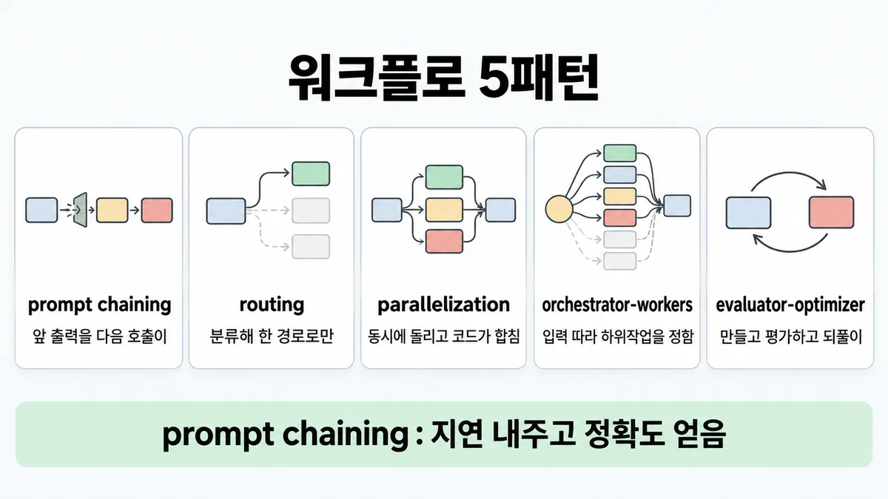
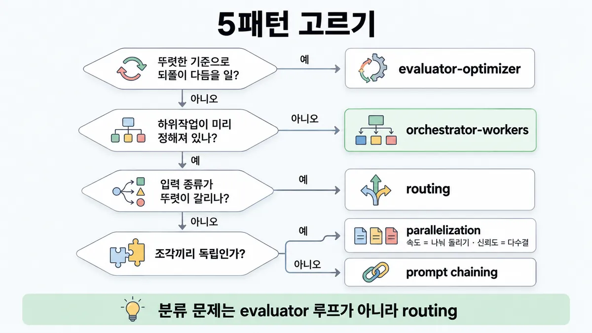
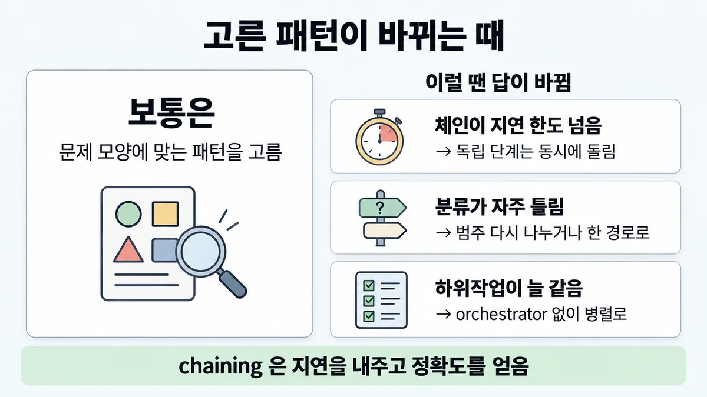

■ 워크플로 5패턴
표시가 없는 문장은 공식 문서에서 확인한 내용이에요. 다른 표시는 읽는 법
왜 배우나 — 시험이 요구하는 것
시험 목표 1.3 구조 패턴 고르기 · D1 설계 17%Select appropriate architectural patterns (workflow, agentic, augmented LLM)
이 개념으로 푸는 판단 (할 수 있어야 하는 것)
- 1.3② 워크플로 5패턴 중 무엇? — 체이닝 / 라우팅 / 병렬(나눠 돌리기·여러 번 돌려 다수결) / orchestrator-workers / 평가자-개선자 고르기
한눈에
증강 LLM(검색(retrieval)·도구·메모리가 붙은 LLM) 호출을 코드로 엮는 흔한 다섯 모양이다. 처방이 아니라 섞고 고쳐 쓰는 틀이다. 복잡도는 결과가 나아질 때만 더한다
영어 이름은 다섯이다
- prompt chaining(체이닝)
- routing(라우팅)
- parallelization(병렬 : sectioning · voting)
- orchestrator-workers
- evaluator-optimizer(평가자-개선자)
비유 prompt chaining 은 스테이지 게이트 파이프라인이다. routing 은 L7 경로 라우팅이다. parallelization 은 맵리듀스다. orchestrator-workers 는 잡 스케줄러가 작업을 쪼개 워커에 배분하는 것이다. evaluator-optimizer 는 카나리 판정 루프다


ELI5
식당 주방이 주문을 처리하는 다섯 가지 방법이에요.
- 한 요리를 손질 → 굽기 → 담기 순서로 넘기면 느려도 실수가 줄어요.
- 주문서를 보고 피자는 피자 담당, 국수는 국수 담당에게 보내요.
- 여러 요리를 여러 요리사가 동시에 만들거나, 같은 맛을 여럿이 봐요.
- 큰 잔치 주문은 주방장이 그때 일을 나누고, 맛보는 사람이 "짜다" 하면 고쳐서 내요.
개념 설명
원리
모두 같은 재료
- 다섯 모양 모두 "증강 LLM"(검색(retrieval)·도구·메모리가 붙은 LLM) 호출을 코드로 잇는 것이다. 차이는 호출을 잇는 방법이다.
- 순서로 잇는다
- 갈래로 나눈다
- 동시에 돌린다
- orchestrator 가 나눈다
- 피드백 루프로 돈다
모양별로 무엇을 얻나
- prompt chaining(체이닝) : 정확도를 얻고, 지연(latency)을 낸다. 각 호출이 쉬운 일 하나만 하게 된다. 사이에 코드 검사(gate)를 둘 수 있다.
- routing(라우팅) : 전문화를 얻는다. 한 프롬프트로 모든 종류를 맞추면, 한 종류를 좋게 할수록 다른 종류가 나빠진다. 그래서 나눠서 각자 최적화한다. 대가는 분류 호출 1번이다. 분류가 틀리면 엉뚱한 경로로 간다.
- parallelization(병렬) : 나눠 돌리기는 속도를 얻는다. 다수결은 신뢰도를 얻는다. 고려할 게 여럿이면 하나씩 따로 보는 편이 대개 낫다(집중).
- orchestrator-workers : 유연성을 얻는다. 하위작업을 미리 못 정할 때 orchestrator 가 입력을 보고 나눈다. 모양은 parallelization 과 비슷하다. 차이는 "미리 정해졌나" 다.
- evaluator-optimizer(평가자-개선자) : 품질을 얻는다. 대신 호출과 지연을 되풀이한 만큼 낸다. 아래 셋이 다 맞을 때만 쓸 만하다.
- 기준이 뚜렷하다
- 피드백으로 나아진다
- LLM 이 그 피드백을 줄 수 있다
고르는 순서
- 하위작업을 미리 아나? 모르면 orchestrator-workers 를 쓴다. 에이전트도 후보다(◆ 워크플로 vs 에이전트).
- 알면 세 가지를 차례로 묻는다.
- 종류가 뚜렷이 갈리나? (routing)
- 조각끼리 독립인가? (parallelization)
- 앞 출력이 다음 입력인가? (prompt chaining)
- 품질 기준이 뚜렷하면 어느 모양에든 evaluator 루프를 덧붙일 수 있다. 모양은 섞어 쓴다.
핵심 질문 두 개
- 이 일의 조각은 미리 정해져 있나, 입력을 봐야 정해지나?
- 내가 얻으려는 게 정확도·전문화·속도·신뢰도·품질 중 무엇인가?
규칙과 판단


갈림길
①②④ 5패턴 고르기 [1.3②]
다음 물음 — 평가 기준이 뚜렷한가?
orchestrator-workers
필요한 하위작업을 예측 못 하는 복잡한 일이다. orchestrator 가 입력에 따라 정한다
routing
따로 다루는 게 나은 뚜렷한 범주가 있다. 분류도 정확히 된다
↓ 아래 「parallelization 두 갈래」 갈림길로 이어짐
다음 물음 — 무엇을 얻으려 하나?
prompt chaining
고정 하위작업으로 쉽고 깔끔히 나뉜다. 지연(latency)을 감수하고 정확도를 얻는다
③ parallelization 두 갈래 [1.3②]
나눠 돌리기(sectioning)
독립 하위작업을 동시에 돌린다
다수결(voting)
같은 일을 여러 번 돌려 여러 관점·시도를 얻는다
⑤ 되풀이 다듬기 [1.3②]
evaluator-optimizer
한 호출이 만들고 다른 호출이 평가·피드백한다. 이것을 루프로 돈다
evaluator-optimizer 가 아니다
평가 기준이 흐린 일에는 evaluator 루프를 쓰지 않는다. 뚜렷한 기준과 두 신호가 조건이다
routing
분류 문제에는 evaluator-optimizer 루프를 쓰지 않는다. 뚜렷한 범주와 정확한 분류가 있으면 routing 이다
흐름
그림 속 이름·금액·시간·토큰 수는 예시예요. 공식 한도·동작은 카드 본문 값이 기준.
장면 글로 보기
칸 : 입력 → 코드 → LLM 호출들 → 출력
질문 : 이 입력은 어떤 모양으로 흘러갈까?
① routing ✓
- 시작 : 입력 — 말 : “환불 요청했는데 아직 안 들어왔어요”
- 분류 : 입력 → 코드 : 입력을 분류한다 — 쪽지 : 분류 결과: "환불"
- 보냄 : 코드 → LLM 호출들 : 전용 후속 처리 하나로만 보낸다 — 쪽지 : 환불 전용 프롬프트 + 도구 / 일반 · 기술 경로는 안 감
- 답 : LLM 호출들 → 출력 — 말 : “환불은 접수됐고 영업일 3일 안에 들어와요.”
- 끝 : 입력은 한 경로로만 간다. 환불 쪽을 다듬어도 기술 지원 답은 안 건드린다
② 나눠 돌리기 ✓
- 시작 : 입력 — 말 : “환불 요청했는데 아직 안 들어왔어요”
- 받음 : 입력 → 코드 : 같은 문의를 두 호출로 보낸다 — 쪽지 : 문의 1건 → 호출 2개
- 나눔 : 코드 → LLM 호출들 : 독립 하위작업을 동시에 돌린다 — 쪽지 : 호출 A: 답 쓰기 / 호출 B: 부적절 여부 선별
- 합침 : LLM 호출들 → 출력 : 코드가 합친다 — 쪽지 : A: 답 초안 / B: 문제 없음 → 보냄
- 끝 : 독립 조각을 동시에 돌려 속도를 얻는다
③ prompt chaining 이면 빨라진다? ≠
- 시작 : 입력 — 쪽지 : 상품 설명 요청 / 응답 한도 5초
- 순서 : 코드 → LLM 호출들 : 앞 출력을 다음 호출이 처리한다 — 쪽지 : 개요 → 기준 검사 → 본문 / 단계마다 2.5초
- 타이머 : LLM 호출들 : 지연을 감수한다
- 결과 : LLM 호출들 → 출력 : 이어 붙인 시간 — 쪽지 : 2.5 × 3 = 7.5초 / 한도 5초 넘김
- 끝 : prompt chaining 은 지연을 감수하고 정확도를 얻는다. 단계당 2.5초는 그림용 가정이다
나머지 규칙
-
섞어 쓰기 : 다섯 모양은 처방이 아니다. 섞고 고쳐 쓴다. 성공 열쇠는 성능을 재고 되풀이하는 것이다
워크플로냐 에이전트냐는 ◆ 워크플로 vs 에이전트 에서 먼저 정한다
규칙 원문 ①②③④⑤ (갈림길로 그린 규칙)
-
prompt chaining : 앞 호출의 출력을 다음 호출이 처리하는 순서다. 중간 단계에 코드 검사(gate)를 둬 궤도를 확인한다 [1.3②]
쓰는 때는 일이 고정 하위작업으로 쉽고 깔끔히 나뉠 때다. 목적은 각 호출을 쉬운 일로 만드는 것이다. 지연을 감수하고 정확도를 얻는다
예 : 마케팅 문구를 쓴 뒤 번역한다. 개요를 쓰고, 기준을 검사하고, 본문을 쓴다
긴 프롬프트에서 일부 제약을 계속 무시하면, 1차로 생성하고 2차로 "고치기 전용" 호출을 둔다. 단계 사이에 LLM 아닌 처리도 넣을 수 있다 (Skilljar)
-
routing : 입력을 분류해 전문 후속 작업(프롬프트·도구)으로 보낸다. 관심사를 분리한다. 분리하지 않으면 한 종류에 맞춘 최적화가 다른 입력을 해친다 [1.3②]
쓰는 때는 따로 다루는 게 나은 뚜렷한 범주가 있고, 분류가 정확히 될 때다(LLM 또는 전통 분류 모델)
예 : 고객 문의(일반 · 환불 · 기술 지원)를 서로 다른 후속 처리로 보낸다. 쉬운 질문은 작은 모델(Haiku 4.5)로, 어려운 질문은 더 강한 모델로 보낸다
입력은 한 경로로만 간다. 분류 단계의 부담보다 전문 처리 이득이 커야 한다 (Skilljar)
검색 질의를 index 로 보내는 routing 은 ■ 질의 패턴별 검색 에서 다룬다
-
parallelization : 여러 호출을 동시에 돌리고 코드가 합친다 [1.3②]
나눠 돌리기(sectioning)는 독립 하위작업을 돌려 속도를 얻는다. 다수결(voting)은 같은 일을 여러 번 돌려 여러 관점·시도로 신뢰도를 얻는다
고려할 게 여럿이면 하나씩 따로 호출하는 편이 대개 낫다(각자 집중한다)
예는 셋이다
- 한 인스턴스는 답하고, 다른 인스턴스는 부적절 여부를 선별한다(가드레일). 한 호출이 둘 다 하는 것보다 낫다
- 여러 프롬프트로 코드 취약점을 검토한다
- 여러 관점·투표 기준으로 부적절 여부를 판정한다
병렬 하위작업은 똑같을 필요가 없다. 각자 프롬프트·도구·기준을 가진다 (Skilljar)
-
orchestrator-workers : 중앙 LLM 이 동적으로 나누고, worker LLM 에 맡기고, 결과를 합친다 [1.3②]
쓰는 때는 필요한 하위작업을 예측 못 하는 복잡한 일이다. 예는 코딩(바꿀 파일 수·내용이 과제에 따라 다르다)과 여러 출처를 모아 분석하는 검색이다
parallelization 과 모양은 비슷하다. 차이는 하위작업이 미리 정해지지 않고, 입력에 따라 orchestrator 가 정한다는 점이다
여러 에이전트로 갈지는 ◆ 단일 vs 멀티 에이전트 에서 다룬다
-
evaluator-optimizer : 한 호출이 만들고 다른 호출이 평가·피드백한다. 이것을 루프로 돈다 [1.3②]
쓰는 때는 평가 기준이 뚜렷하고, 되풀이 다듬기가 측정 가능한 이득을 낼 때다. 이 패턴이 맞는다는 신호는 둘이다
- 사람이 피드백하면 나아진다
- LLM 이 그런 피드백을 줄 수 있다
예 : 문학 번역, 그리고 더 찾을지 evaluator 가 정하는 여러 번의 검색이다
이미지로 CAD 모델을 만들고, 렌더해서 원본과 채점한다. 통과할 때까지 반복한다 (Skilljar)
더 깊이 : 판단 규칙 · 상황 변수 (설명)
판단 규칙
| 조건 | 답 | 근거 |
|---|---|---|
| 고정 하위작업으로 쉽고 깔끔히 나뉜다 · 앞 출력이 다음 입력이다 | prompt chaining 을 쓴다 | building-effective-agents |
| 긴 프롬프트에서 일부 제약을 계속 무시한다 | prompt chaining 을 쓴다(생성한 뒤 고치기 전용 호출) | Skilljar 287800 |
| 따로 다루는 게 나은 뚜렷한 범주가 있고, 분류가 정확히 된다 | routing 을 쓴다 | building-effective-agents |
| 쉬운 질문과 어려운 질문이 섞여 있고, 비용을 줄이고 싶다 | routing 을 쓴다(쉬운 것은 작은 모델, 어려운 것은 강한 모델) | building-effective-agents |
| 독립 하위작업이고, 속도가 필요하다 | parallelization 의 나눠 돌리기를 쓴다 | building-effective-agents |
| 여러 관점·시도로 신뢰도를 얻고 싶다 | parallelization 의 다수결을 쓴다 | building-effective-agents |
| 주 답과 부적절 선별(가드레일)이 있다 | 병렬로 따로 돌린다 (한 호출에 둘 다 넣는 것보다 낫다) | building-effective-agents |
| 필요한 하위작업을 예측하지 못한다 | orchestrator-workers 를 쓴다 | building-effective-agents |
| 평가 기준이 뚜렷하고, 되풀이가 측정 가능한 이득을 내고, 두 신호가 있다 | evaluator-optimizer 를 쓴다 | building-effective-agents |
| 어느 모양이든 | 섞고 고쳐 쓴다. 성능을 재고 되풀이한다 | building-effective-agents |
상황 변수
| 변수 | 값 | 답 쪽 | 등급 | 근거 |
|---|---|---|---|---|
| 하위작업 | 미리 정해져 있다 | prompt chaining · routing · parallelization | building-effective-agents | |
| 하위작업 | 입력에 따라 정해진다 | orchestrator-workers | building-effective-agents | |
| 조각 사이 | 앞 출력이 다음 입력이다 | prompt chaining | building-effective-agents | |
| 조각 사이 | 서로 독립이다 | 나눠 돌리기 | building-effective-agents | |
| 입력 | 범주가 뚜렷하고 분류가 정확하다 | routing | building-effective-agents | |
| 입력 | 범주가 흐리다 · 분류가 자주 틀린다 | routing 이 약하다. 한 경로(또는 orchestrator)로 보낸다 | 업계 일반 | routing 전제의 반대 |
| 목표 | 지연 최소 | prompt chaining 이 약하다(순서대로 이어 지연을 낸다). 나눠 돌리기 쪽이다 | building-effective-agents | |
| 목표 | 정확도 | prompt chaining(각 호출을 쉬운 일로 만든다) | building-effective-agents | |
| 목표 | 결과 신뢰도 | 다수결 | building-effective-agents | |
| 평가 기준 | 뚜렷하다 · LLM 이 피드백할 수 있다 | evaluator-optimizer | building-effective-agents | |
| 평가 기준 | 흐리다 · 답이 갈래 하나다(분류) | evaluator 루프의 이득이 약하다 | 업계 일반 | 두 신호의 반대 |
연습 문제
쇼핑몰 문의는 일반 · 환불 · 기술 지원 세 종류로 늘 정해져 있다뚜렷한 범주. 그리고 작은 분류 호출이 종류를 거의 틀리지 않고 맞힌다분류 정확. 지금은 만능 프롬프트 하나가 다 받는다. 그런데 환불 답을 다듬을 때마다 기술 지원 답이 나빠진다. 어떤 패턴으로 바꿔야 하나?
시험 대비
함정
- "prompt chaining 을 고르는 이유는 비용·지연이 낮아서다" 는 함정이다. prompt chaining 은 지연을 감수하고 정확도를 얻는다 (영상 ⚠)
- "단계를 쪼개면 빨라진다" 는 함정이다. 순서대로 잇는 prompt chaining 은 지연을 낸다. 빨라지는 것은 독립 조각을 동시에 돌리는 나눠 돌리기다
- "분류 문제에 evaluator-optimizer 루프를 쓴다" 는 함정이다. 뚜렷한 범주와 정확한 분류가 있으면 routing 이다
- 분류가 부정확한데 routing 을 쓰는 것은 함정이다. routing 의 전제는 분류가 정확히 되는 것이다
- parallelization 과 orchestrator-workers 를 헷갈리는 것은 함정이다. 하위작업이 미리 정해졌으면 parallelization 이다. 입력에 따라 정해지면 orchestrator-workers 다
- 다수결을 속도 수단으로 쓰는 것은 함정이다. 다수결은 신뢰도를 얻는다. 속도는 나눠 돌리기로 얻는다
- 가드레일 검사와 주 답을 한 호출에 넣는 것은 함정이다. 따로 병렬로 돌리는 편이 대개 낫다
- 평가 기준이 흐린 일에 evaluator 루프를 쓰는 것은 함정이다. 뚜렷한 기준과 두 신호가 조건이다
신호
"This workflow is ideal for situations where the task can be easily and cleanly decomposed into fixed subtasks."
"The main goal is to trade off latency for higher accuracy, by making each LLM call an easier task."
"Routing works well for complex tasks where there are distinct categories that are better handled separately, and where classification can be handled accurately, either by an LLM or a more traditional classification model/algorithm."
"Parallelization is effective when the divided subtasks can be parallelized for speed, or when multiple perspectives or attempts are needed for higher confidence results."
"This workflow is well-suited for complex tasks where you can’t predict the subtasks needed"
"subtasks aren't pre-defined, but determined by the orchestrator based on the specific input."
"This workflow is particularly effective when we have clear evaluation criteria, and when iterative refinement provides measurable value."


더 깊이 : 뒤집히는 때 · 오답 재료 (설명)
뒤집히는 때
1. prompt chaining 은 정확한데 지연 한도를 넘을 때
- 조건 : 3단계 체인이다. 단계마다 평균 2.5초가 걸린다. 응답 한도는 5초다.
- 계산 : 순서대로 이으면 3 × 2.5 = 7.5초다. 한도를 넘는다. 세 단계 중 두 개가 서로 독립이면, 그 둘을 나눠 돌리기로 동시에 돌린다. 그러면 2.5 + 2.5 = 5초다.
- 전제 : 단계 시간이 같다고 둔다. 합치는 코드 시간은 뺀다. 두 단계가 정말 서로의 출력을 안 쓸 때만 성립한다.
- 등급 : 계산. 공식은 prompt chaining 을 "지연을 감수하고 정확도를 얻는" 방식이라고 한다. 그래서 지연이 제약인 지문이면 prompt chaining 이 약한 보기다.
- 근거 : building-effective-agents
2. routing 인데 분류가 자주 틀릴 때
- 조건 : 결제·기술·해지 문의 중 절반가량이 두 범주에 걸친다.
- 판단 : routing 의 공식 조건은 "분류가 정확히 된다" 는 것이다. 이 조건이 깨지면 잘못된 전문 경로로 가서 오히려 나빠진다. 그래서 범주를 다시 나누거나, 걸친 문의는 한 경로(일반 응답기)로 보낸다. 분류 부담보다 전문 처리 이득이 커야 한다(Skilljar).
- 등급 : (조건) · 업계 일반 (처방)
- 근거 : building-effective-agents · Skilljar 287801
3. 병렬로 나눴는데 사실 순서가 있을 때
- 조건 : "요약, 그다음 요약 기반 번역" 을 속도 욕심에 동시에 돌린다.
- 판단 : 번역이 요약 결과를 써야 한다. 그래서 독립이 아니다. 나눠 돌리기 조건이 깨진다. prompt chaining 으로 바꾼다.
- 등급 : (조건)
- 근거 : building-effective-agents (예 : 문구를 쓰고 번역 = prompt chaining)
4. 하위작업이 미리 정해졌는데 orchestrator 를 둘 때
- 조건 : 매번 같은 네 관점(보안·성능·스타일·테스트)으로 코드를 검토한다.
- 판단 : 조각이 미리 정해져 있다. 그래서 orchestrator 없이 parallelization(나눠 돌리기 또는 다수결)이 더 단순하다. orchestrator-workers 는 바꿀 파일 수·내용이 과제마다 달라 미리 못 정할 때 쓴다.
- 근거 : building-effective-agents
오답 재료
| 오답 | 왜 끌리나 | 왜 틀리나 | 근거 |
|---|---|---|---|
| "prompt chaining 을 고르는 이유 = 비용·지연이 낮아서" | 호출 하나하나가 작아 보인다 | 지연을 감수하고 정확도를 얻는 방식이다 | building-effective-agents (영상 Part 18 [02:39] 주장과 반대) |
| "분류 문제에 evaluator-optimizer 루프" | 품질을 높이는 루프라 좋아 보인다 | 뚜렷한 범주와 정확한 분류가 있으면 routing 이다. evaluator 는 뚜렷한 기준으로 다듬을 이득이 있을 때 쓴다 | building-effective-agents |
| "단계를 쪼개면 빨라진다" | 일이 작아지니까 빨라 보인다 | 순서대로 이으면 지연이 더해진다. 빨라지는 것은 독립 조각을 동시에 돌릴 때다 | building-effective-agents |
| "하위작업을 LLM 이 나누니 parallelization" | 여러 호출이 동시에 실행된다 | 미리 정해졌으면 parallelization 이다. 입력에 따라 정해지면 orchestrator-workers 다 | building-effective-agents |
| "다수결로 빠르게" | 여러 호출을 동시에 돌린다 | 다수결은 신뢰도를 얻는다. 속도는 나눠 돌리기로 얻는다 | building-effective-agents |
| "가드레일 검사도 주 답 호출에 함께 넣어 호출을 줄인다" | 호출 수가 줄어 싸다 | 따로 병렬로 돌리는 편이 대개 낫다 | building-effective-agents |
| "모든 문의를 한 만능 프롬프트로" | 관리할 프롬프트가 하나다 | 한 종류 최적화가 다른 입력을 해친다. 그래서 routing 을 쓴다 | building-effective-agents |
참고
더 깊이 : 출처 · 상태 · 미해결 (참고)
출처
- 가이드 목표 1.3 공식 시험 가이드 v1.0
- building-effective-agents
- Skilljar API 287800
- 287801
- 287804
- 287796
상태
- 모든 줄을 공식 문서에서 확인
미해결
- 목록 1.3② 의 영어 신호 두 개("The main goal is to trade off latency…" · "where classification can be handled accurately")는 원문에서 찾았다. 목록의 "orchestrator-workers = 하위작업을 미리 모름" 도에서 확인했다.
- Skilljar 강의 목록(287796 · 287800 · 287801 · 287804)에 orchestrator-workers 강의는 없다. 그래서 공식 글만으로 쓴다.
- prompt chaining·parallelization 의 실제 지연 숫자는 공식에 없다. 뒤집히는 때 1 은 가정 숫자로 한 계산이다.